Texto extraído da edição fornecida, sem atualização normativa. Consulte a página original para conferir tabelas, formulários e instruções ilustradas. A numeração dos links corresponde à página do arquivo PDF.
Apresentação
PDF · p. 1DECLARAÇÃO DE VACÂNCIA POR FALECIMENTO
DECLARAÇÃO DE VACÂNCIA POR POSSE EM OUTRO CARGO INACUMULÁVEL
EXONERAÇÃO DE CARGO EFETIVO
DAP-06.027
Legislação
PDF · p. 2É dever do servidor público, da Organização Militar (OM) e da Região
Militar (RM) ler e acompanhar a atualização da legislação que se refere
aos assuntos tratados neste Caderno de Orientação.
Lei nº 8.112, de 11
de dezembro de
1990, art. 33, inciso
IX
Lei nº 8.112, de 11
de dezembro de
1990, art. 33, inciso
VIII
Nota
DECOR/CGU/AGU nº
117/2009 - JGAS
Lei nº 8.112, de 11
de dezembro de
1990, art. 33, 34 e
§§ 3º e 4º do art. 78
DECLARAÇÃO DE VACÂNCIA POR
FALECIMENTO
DECLARAÇÃO DE VACÂNCIA POR POSSE
EM OUTRO CARGO INACUMULÁVEL
EXONERAÇÃO DE CARGO EFETIVO
DECLARAÇÃO DE VACÂNCIA POR POSSE
EM OUTRO CARGO INACUMULÁVEL
Ver página original — tabelas, imagens e diagramas
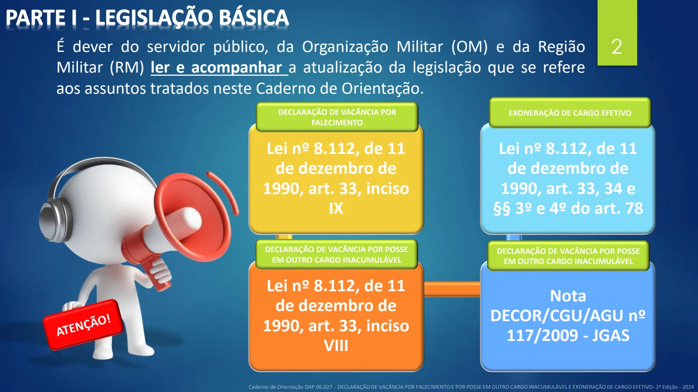
Conceitos
PDF · p. 3Esta página contém conteúdo gráfico. Consulte a reprodução original abaixo.
Conceitos
PDF · p. 4VACÂNCIA: A vacância é um ato administrativo pelo qual um cargo
público torna-se vago, desocupado, sem titular.
EXONERAÇÃO DE CARGO EFETIVO: forma de vacância de cargo
público, formalizada mediante publicação de ato no Diário Oficial da
União (DOU).
Exoneração e declaração de vacância
PDF · p. 5Esta página contém conteúdo gráfico. Consulte a reprodução original abaixo.
Exoneração e declaração de vacância
PDF · p. 61. EXONERAÇÃO DE CARGO EFETIVO:
A exoneração de cargo
efetivo será de ofício,
quando:
quando o servidor não
for aprovado no estágio
probatório
ou
tendo tomado posse, o
servidor não entrar em
exercício no prazo estabelecido
Exoneração e declaração de vacância
PDF · p. 72. DECLARAÇÃO DE VACÂNCIA:
2.1. POR FALECIMENTO: 2.2. POR POSSE EM OUTRO CARGO INACUMULÁVEL:
Apresentação do atestado de óbito
Apresentação de comprovante
oficial de posse
em outro cargo, fornecido pelo
órgão/entidade
Documentos necessários
PDF · p. 8Esta página contém conteúdo gráfico. Consulte a reprodução original abaixo.
Documentos necessários
PDF · p. 9DECLARAÇÃO DE VACÂNCIA POR FALECIMENTO
DOCUMENTO RESPONSÁVEL PELO
FORNECIMENTO OBSERVAÇÕES
DIEx de informação do falecimento OM, via RM -
Portaria de vacância por falecimento DAP Anexo A
EXONERAÇÃO E DECLARAÇÃO DE VACÂNCIA POR POSSE EM OUTRO CARGO INACUMULÁVEL
DOCUMENTO RESPONSÁVEL PELO
FORNECIMENTO OBSERVAÇÕES
Requerimento Servidor No SPED, conforme instruções na
próxima página
Declaração de bens e valores Servidor Anexo B
Comprovante oficial de posse em
outro cargo (SOMENTE para
vacância por posse em outro
cargo inacumulável)
Servidor Fornecido pelo órgão/entidade
Informação OM No SPED, conforme instruções na
próxima página
Portaria de vacância por posse
em cargo inacumulável DAP Anexo C
Portaria de exoneração de cargo
efetivo DAP Anexo D
1. DOCUMENTOS NECESSÁRIOS:
Ver página original — tabelas, imagens e diagramas
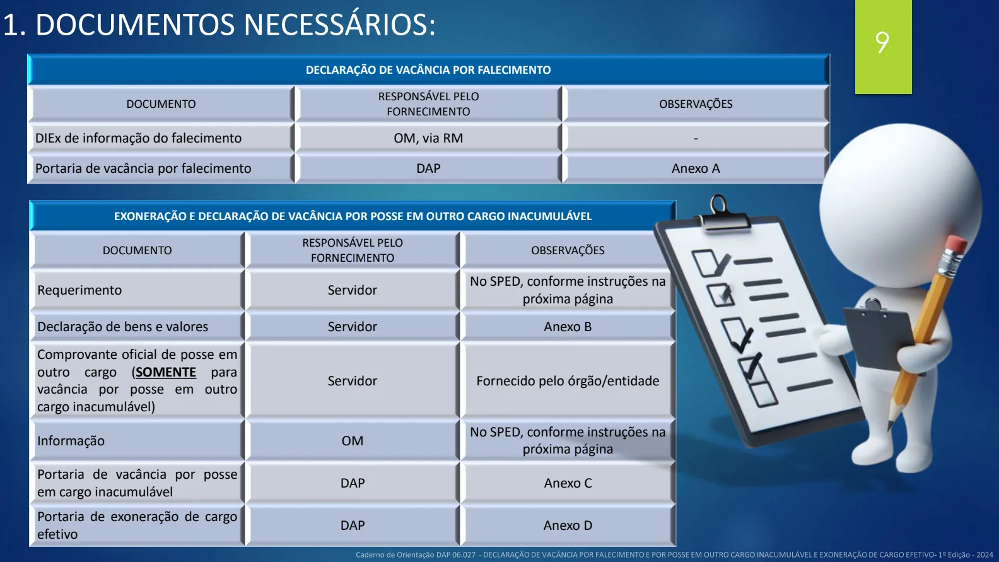
Documentos necessários
PDF · p. 10102. REDIGINDO OS DOCUMENTOS NO SPED (Requerimento e Informação)
1
2
4
5
Requerimento Informação
3
6
Ver página original — tabelas, imagens e diagramas
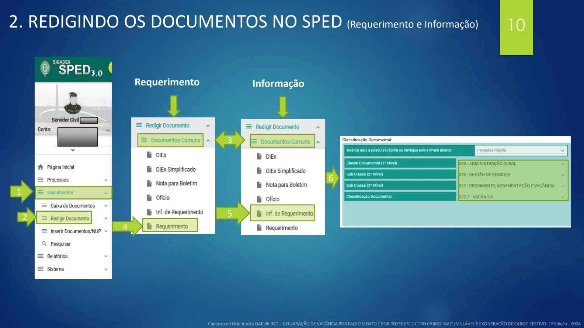
Tramitação
PDF · p. 11Esta página contém conteúdo gráfico. Consulte a reprodução original abaixo.
Tramitação
PDF · p. 121.TRAMITAÇÃO - DECLARAÇÃO DE VACÂNCIA POR
FALECIMENTO:
*Nos casos CCE ou FCE de magistério, a indicação deve tramitar pelo Departamento de Educação e Cultura do Exército - DECEx ou Departamento de Ciência e Tecnologia - DCT
1. Informar à DAP , via RM, o
falecimento do servidor e enviar
certidão de óbito
1. Elaborar e expedir a portaria de
vacância.
2. Publicar a portaria no DOU.
3.Realizar upload do processo no
Assentamento Funcional Digital.
1. Proceder ao desligamento do
servidor no SIAPE
2. Arquivar o processo junto à Pasta
funcional do servidor
OM
DAP
OM
Ver página original — tabelas, imagens e diagramas
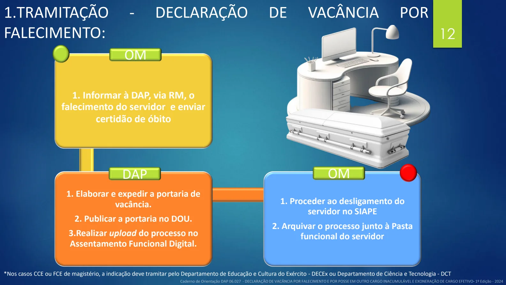
Tramitação
PDF · p. 132. TRAMITAÇÃO – DECLARAÇÃO DE VACÂNCIA POR POSSE EM OUTRO CARGO
INACUMULÁVEL :
1. Fazer o requerimento no SPED e
encaminhar para a unidade de pessoal da
OM enquadrante.
2. Providenciar Declaração de Bens e
Valores.
1. Receber o requerimento e conferir os
documentos.
2. Providenciar a Informação no SPED
3. Encaminhar o processo ao Cmdo da RM
1. Conferir o processo.
2. Encaminhar o processo à DAP, se
atendidas as prescrições legais.
1. Elaborar e expedir a portaria de vacância.
2. Publicar a portaria no DOU.
3. Registrar a vacância no e-pessoal
4. Realizar upload do processo no Assentamento
Funcional Digital.
1. Proceder ao desligamento do servidor no
SIAPE, a contar da data da posse no outro
cargo.
2. Arquivar o processo junto à Pasta
funcional do servidor
SERVIDOR
OM
RM
DAP
OM
Ver página original — tabelas, imagens e diagramas
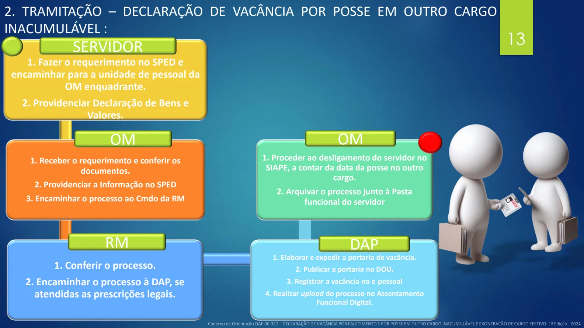
Tramitação
PDF · p. 141. Identificar o motivo da exoneração
2. Encaminhar o processo para o Cmdo
RM
1. Conferir o processo.
2. Encaminhar o processo à DAP, se
atendidas as prescrições legais.
1. Elaborar e expedir a portaria de
vacância.
2. Publicar a portaria no DOU.
3. Registrar a vacância no e-pessoal
4. Realizar upload do processo no
Assentamento Funcional Digital.
1. Proceder ao desligamento do servidor
no SIAPE, a contar da data da posse no
outro cargo.
2. Arquivar o processo junto à Pasta
funcional do servidor
OM
RM
DAP
OM 14
3. EXONERAÇÃO DE CARGO EFETIVO:
Ver página original — tabelas, imagens e diagramas
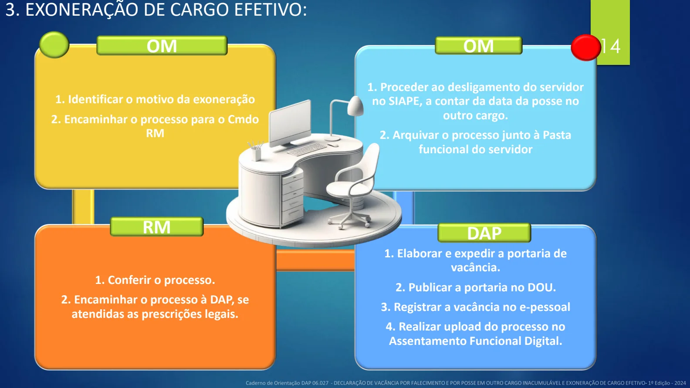
Fontes e elaboração
PDF · p. 15ELABORAÇÃO:
ASSESSORIA TÉCNICA DA SPC/DAP
SUBSEÇÃO DE CARREIRA DA SPC/DAP
MAIO DE 2024
Para conhecer melhor o assunto, leia as
legislações indicadas no início deste caderno, disponíveis no link:
https://legis.sigepe.gov.br/legis/pesquisa-avancada
Ver página original — tabelas, imagens e diagramas
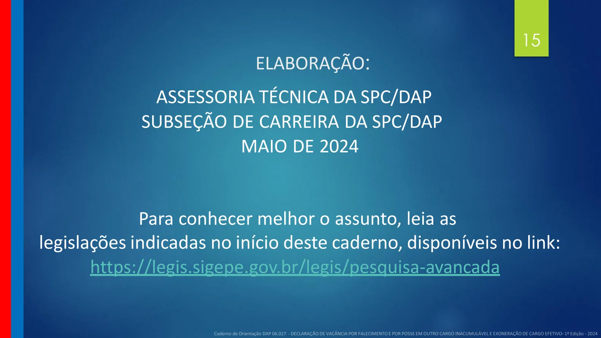
Anexos e modelos
PDF · p. 16ANEXOS
ANEXO A
Portaria de Vacância por Falecimento
MINISTÉRIO DA DEFESA
EXÉRCITO BRASILEIRO
(escalões hierárquicos até a OM expedidora)
(Denominação histórica)
PORTARIA-DAP/DGP/C Ex No ____, DE ___ DE _________ DE 202__
Vacância de cargo efetivo
O DIRETOR DE ASSISTÊNCIA AO PESSOAL, usando da competência que lhe foi subdelegada
pelo Chefe do Departamento-Geral do Pessoal, por meio da Portaria DGP/CEx no 458, de 10 de agosto de
2023, de acordo com o artigo 33, inciso IX, da Lei no 8.112, de 11 de dezembro de 1990, e considerando o
constante do Processo EB xxxxx.xxxxxx/202x-xx, resolve
DECLARAR VAGO,
a contar de _____ de ____________ de 202__, o cargo de _______________da carreira do
________________________, Classe _______, Padrão ________ – _____, ocupado pelo (a) servidor (a)
________________________________________, Matrícula SIAPE nº _______________________ , do
__________________________________, em virtude do seu falecimento.
_____________________________________
(nome e posto militar do diretor)
Diretor de Assistência ao Pessoal
Ver página original — tabelas, imagens e diagramas
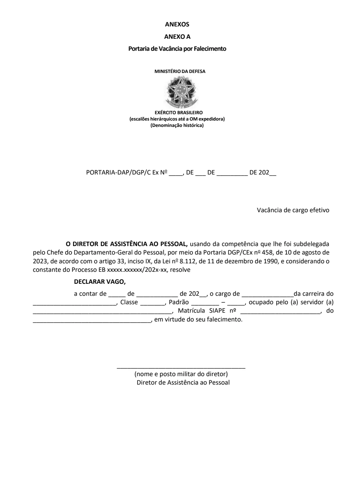
Anexos e modelos
PDF · p. 17ANEXO B
Declaração de bens e valores
MINISTÉRIO DA DEFESA
EXÉRCITO BRASILEIRO
(escalões hierárquicos até a OM expedidora)
(Denominação histórica)
DECLARAÇÃO DE BENS E VALORES
Eu, ____________________________________________________________ocupante do
cargo efetivo___________________________________________(nome do cargo), Matrícula SIAPE
nº______________________nomeado (a) por meio da Portaria nº_____, de____/__________/______,
publicada no DOU nº___________________de ____/___________/______, d eclaro, para fins de posse
no mesmo, que possuo os seguintes bens e valores:
_____________________________________________________________________________________
_____________________________________________________________________________________
_____________________________________________________________________________________
_____________________________________________________________________________________
____________________________________________________________________________________.
(Local e data)
____________________________
Nome e assinatura do servidor
Ver página original — tabelas, imagens e diagramas
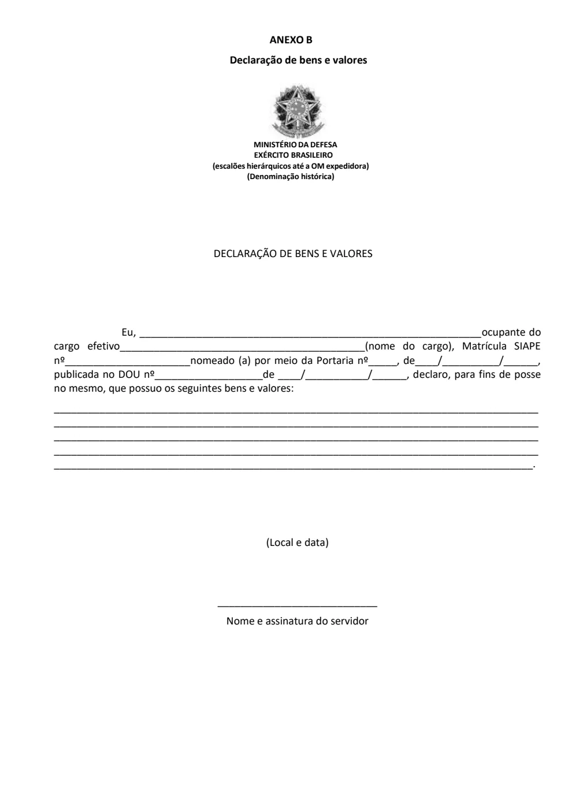
Anexos e modelos
PDF · p. 18ANEXO C
Portaria de Vacância por Posse em Cargo Inacumulável
MINISTÉRIO DA DEFESA
EXÉRCITO BRASILEIRO
(escalões hierárquicos até a OM expedidora)
(Denominação histórica)
PORTARIA-DAP/DGP/C Ex No ___, DE ___ DE __________ DE 202__
O DIRETOR DE ASSISTÊNCIA AO PESSOAL , no uso da competência que lhe foi subdelegada
pelo Chefe do Departamento-Geral do Pessoal, por meio da Portaria DGP/CEx no 458, de 10 de agosto de
2023, de acordo com o artigo 33, inciso VIII, da Lei n o 8.112, de 11 de dezembro de 1990 , e o constante
dos Processos EB xxxxx.xxxxxx/202x-xx, resolve
DECLARAR VAGO
a contar de __ de ________ de 202__, o cargo de ________________________, classe ___,
nível ____, ocupado pelo servidor _______________, Matrícula SIAPE nº ____________, do
__________________, em virtude de posse em outro cargo inacumulável.
_____________________________________
(nome e posto militar do diretor)
Diretor de Assistência ao Pessoal
Ver página original — tabelas, imagens e diagramas
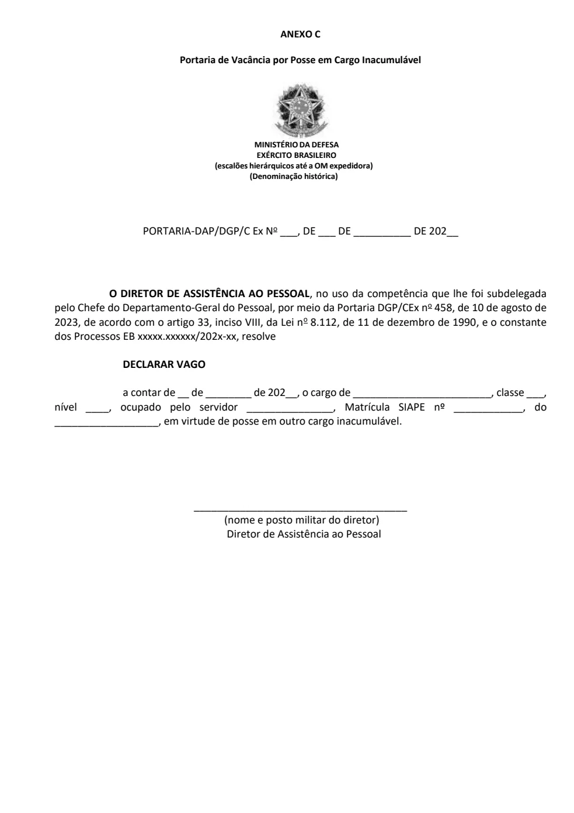
Anexos e modelos
PDF · p. 19ANEXO D
Portaria de exoneração de cargo efetivo
MINISTÉRIO DA DEFESA
EXÉRCITO BRASILEIRO
(escalões hierárquicos até a OM expedidora)
(Denominação histórica)
PORTARIA-DAP/DGP/C Ex No ___, DE ___ DE __________ DE 202__
O DIRETOR DE ASSISTÊNCIA AO PESSOAL , no uso da competência que lhe foi subdelegada
pelo Chefe do Departamento-Geral do Pessoal, por meio da Portaria DGP/CEx no 458, de 10 de agosto de
2023, combinada com o Decreto nº 11.097, de 15 de junho de 2022, de acordo com o inciso I do artigo 33
e artigo 34 da Lei no 8.112, de 11 de dezembro de 1990, e o constante do Processo EB xxxxx.xxxxxx/202x-
xx, resolve
EXONERAR,
a pedido, a contar de __de____________de 202 __, o (a) servidor
(a)_______________________________, M atrícula SIAPE nº____________, do cargo de
__________________, da carreira do_______________ , Classe ___, Padrão ___, do
_________________________________.
_____________________________________
(nome e posto militar do diretor)
Diretor de Assistência ao Pessoal
Ver página original — tabelas, imagens e diagramas
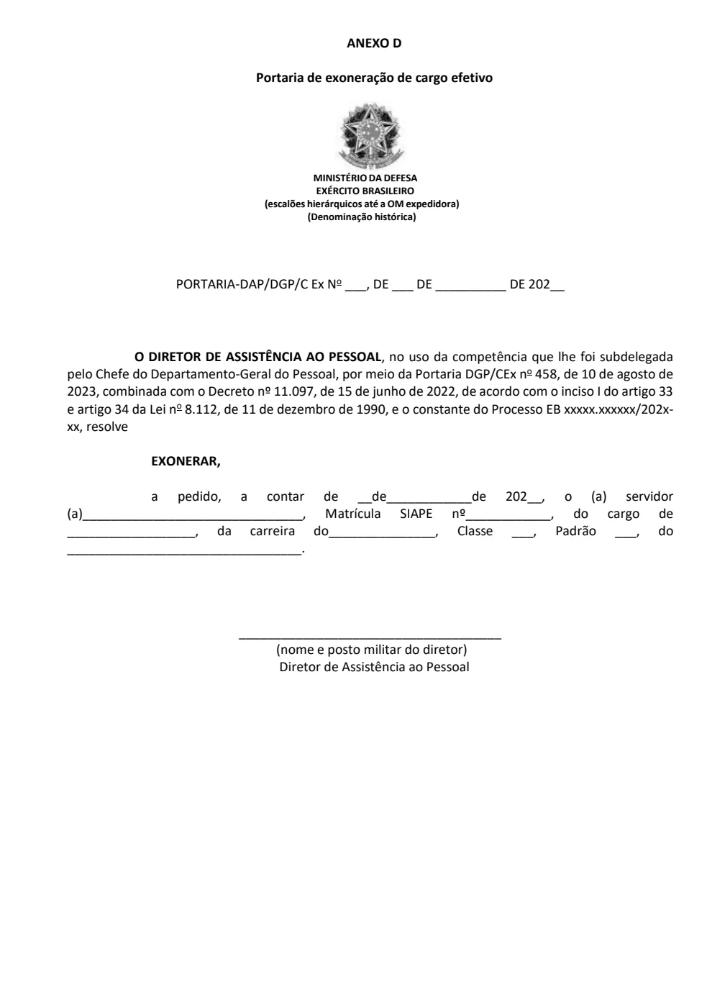